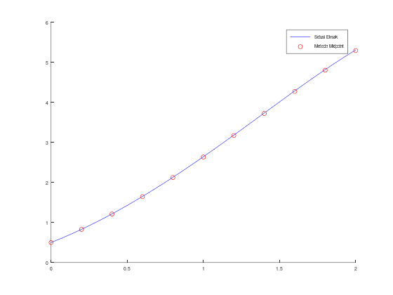
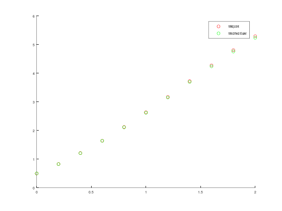
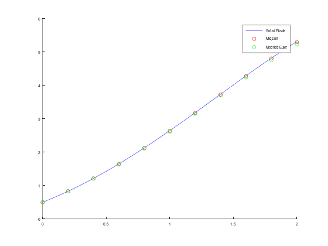
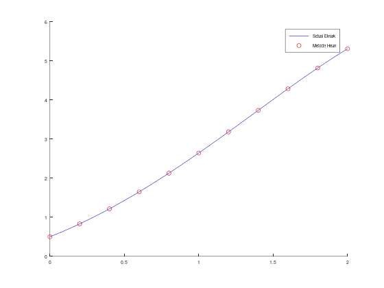
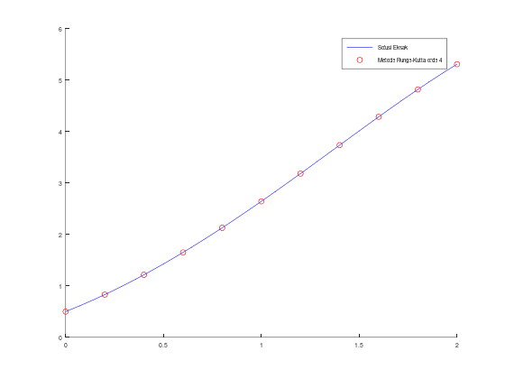
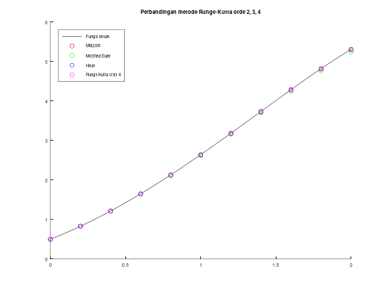

sin(pi/4)ans = 0.7071Kembali ke Persamaan Diferensial Numerik
sin(pi/4)ans = 0.7071format longsin(pi/4)ans = 0.707106781186547Kembali ke default:
formatsin(pi/4)ans = 0.7071\[w_1=\alpha\] \[w_{i+1}=w_i+h f\left(t_i+\frac{h}{2}, w_i+\frac{h}{2} f\left(t_i, w_i\right)\right)\]
bisa juga ditulis,
\[w_1=\alpha\] \[m_1 = f\left(t_i, w_i\right)\] \[w_{i+1}=w_i+h f\left(t_i+\frac{h}{2}, w_i+\frac{h}{2} m_1\right)\]
atau bahkan,
\[w_1=\alpha\] \[m_1 = f\left(t_i, w_i\right)\] \[m_2 = f\left(t_i+\frac{h}{2}, w_i+\frac{h}{2} m_1\right)\] \[w_{i+1}=w_i+h m_2\]
function [t, w] = midpoint(f, a, b, N, alpha)
h = (b - a) / N;
t = zeros(N + 1, 1);
w = zeros(N + 1, 1);
t(1) = a;
w(1) = alpha;
for i = 1 : N
t(i + 1) = t(i) + h;
m1 = f(t(i), w(i));
m2 = f(t(i) + (h / 2), w(i) + (h / 2) * m1);
w(i + 1) = w(i) + h * m2;
endfor
endfunctionMisalkan diberikan MNA sebagai berikut, yang ingin diselesaikan secara numerik dengan \(N = 10\):
\[y' = y - t^2 + 1\] \[0 \le t \le 2\] \[y(0) = 0.5\]
yang kebetulan memiliki solusi eksak:
\[y\left(t\right) = \left( t + 1 \right)^2 - 0.5 e^t\]
Contoh penggunaan:
f = @(t, y) (y - t .^ 2 + 1);
a = 0;
b = 2;
N = 10;
alpha = 0.5;
[t, w] = midpoint(f, a, b, N, alpha);
sln = @(t) (t + 1) .^ 2 - 0.5 * exp(t);
y_eksak = sln(t);
err_midpoint = abs(w - y_eksak);
err_midpoint_total = sum(err_midpoint); % norm L1 (taxicab/Manhattan)
disp("Tabel aproksimasi w, solusi eksak y, dan error:");
[t, w, y_eksak, err_midpoint]
disp("Error total (norm L1):");
disp(err_midpoint_total);
hold on;
fplot(sln, [a, b], 'b');
scatter(t, w, 'r');
legend("Solusi Eksak", "Metode Midpoint");Tabel aproksimasi w, solusi eksak y, dan error:
ans =
0 0.5000 0.5000 0
0.2000 0.8280 0.8293 0.0013
0.4000 1.2114 1.2141 0.0027
0.6000 1.6447 1.6489 0.0043
0.8000 2.1213 2.1272 0.0059
1.0000 2.6332 2.6409 0.0077
1.2000 3.1705 3.1799 0.0095
1.4000 3.7212 3.7324 0.0112
1.6000 4.2706 4.2835 0.0129
1.8000 4.8010 4.8152 0.0142
2.0000 5.2904 5.3055 0.0151
Error total (norm L1):
0.084840
\[w_1=\alpha\] \[w_{i+1}=w_i+\frac{h}{2}\left(f\left(t_i, w_i\right)+f\left(t_{i+1}, w_i+h f\left(t_i, w_i\right)\right)\right)\]
bisa juga ditulis,
\[w_1=\alpha\] \[m_1 = f\left(t_i, w_i\right)\] \[w_{i+1}=w_i+\frac{h}{2}\left(m_1+f\left(t_{i+1}, w_i+h m_1\right)\right)\]
atau bahkan,
\[w_1=\alpha\] \[m_1 = f\left(t_i, w_i\right)\] \[m_2 = f\left(t_{i+1}, w_i+h m_1\right)\] \[w_{i+1}=w_i+\frac{h}{2}\left(m_1+m_2\right)\]
function [t, w] = modified_euler(f, a, b, N, alpha)
h = (b - a) / N;
t = zeros(N + 1, 1);
w = zeros(N + 1, 1);
t(1) = a;
w(1) = alpha;
for i = 1 : N
t(i + 1) = t(i) + h;
m1 = f(t(i), w(i));
m2 = f(t(i + 1), w(i) + h * m1);
w(i + 1) = w(i) + h * (m1 + m2) / 2;
endfor
endfunctionMisalkan diberikan MNA sebagai berikut, yang ingin diselesaikan secara numerik dengan \(N = 10\):
\[y' = y - t^2 + 1\] \[0 \le t \le 2\] \[y(0) = 0.5\]
dan misalkan solusi eksak tidak diketahui.
Contoh penggunaan (perbandingan metode Runge-Kutta orde 2):
f = @(t, y) (y - t .^ 2 + 1);
a = 0;
b = 2;
N = 10;
alpha = 0.5;
[t1, w1] = midpoint(f, a, b, N, alpha);
[t2, w2] = modified_euler(f, a, b, N, alpha);
[t1, w1, w2]
hold on;
scatter(t1, w1, 'r');
scatter(t2, w2, 'g');
legend("Midpoint", "Modified Euler");ans =
0 0.5000 0.5000
0.2000 0.8280 0.8260
0.4000 1.2114 1.2069
0.6000 1.6447 1.6372
0.8000 2.1213 2.1102
1.0000 2.6332 2.6177
1.2000 3.1705 3.1496
1.4000 3.7212 3.6937
1.6000 4.2706 4.2351
1.8000 4.8010 4.7556
2.0000 5.2904 5.2331

Misalkan diketahui solusi eksak:
\[y\left(t\right) = \left( t + 1 \right)^2 - 0.5 e^t\]
Maka kita juga bisa menghitung error dari masing-masing metode.
f = @(t, y) (y - t .^ 2 + 1);
a = 0;
b = 2;
N = 10;
alpha = 0.5;
[t1, w1] = midpoint(f, a, b, N, alpha);
[t2, w2] = modified_euler(f, a, b, N, alpha);
sln = @(t) (t + 1) .^ 2 - 0.5 * exp(t);
y_eksak = sln(t1);
err1 = abs(y_eksak - w1);
err2 = abs(y_eksak - w2);
[t1, y_eksak, w1, err1, w2, err2]
hold on;
fplot(sln, [a, b], 'b');
scatter(t1, w1, 'r');
scatter(t2, w2, 'g');
legend("Solusi Eksak", "Midpoint", "Modified Euler");ans =
0 0.5000 0.5000 0 0.5000 0
0.2000 0.8293 0.8280 0.0013 0.8260 0.0033
0.4000 1.2141 1.2114 0.0027 1.2069 0.0072
0.6000 1.6489 1.6447 0.0043 1.6372 0.0117
0.8000 2.1272 2.1213 0.0059 2.1102 0.0170
1.0000 2.6409 2.6332 0.0077 2.6177 0.0232
1.2000 3.1799 3.1705 0.0095 3.1496 0.0304
1.4000 3.7324 3.7212 0.0112 3.6937 0.0387
1.6000 4.2835 4.2706 0.0129 4.2351 0.0484
1.8000 4.8152 4.8010 0.0142 4.7556 0.0596
2.0000 5.3055 5.2904 0.0151 5.2331 0.0724

\[w_1=\alpha\] \[w_{i+1}=w_i+\frac{h}{4}\left(f\left(t_i, w_i\right)+3 f\left(t_i+\frac{2 h}{3}, w_i+\frac{2 h}{3} f\left(t_i+\frac{h}{3}, w_i+\frac{h}{3} f\left(t_i, w_i\right)\right)\right)\right)\]
bisa juga ditulis,
\[w_1=\alpha\] \[m_1 = f\left(t_i, w_i\right)\] \[w_{i+1}=w_i+\frac{h}{4}\left(m_1+3 f\left(t_i+\frac{2 h}{3}, w_i+\frac{2 h}{3} f\left(t_i+\frac{h}{3}, w_i+\frac{h}{3} m_1\right)\right)\right)\]
atau,
\[w_1=\alpha\] \[m_1 = f\left(t_i, w_i\right)\] \[m_2 = f\left(t_i+\frac{h}{3}, w_i+\frac{h}{3} m_1\right)\] \[w_{i+1}=w_i+\frac{h}{4}\left(m_1+3 f\left(t_i+\frac{2 h}{3}, w_i+\frac{2 h}{3} m_2\right)\right)\]
atau bahkan,
\[w_1=\alpha\] \[m_1 = f\left(t_i, w_i\right)\] \[m_2 = f\left(t_i+\frac{h}{3}, w_i+\frac{h}{3} m_1\right)\] \[m_3 = f\left(t_i+\frac{2 h}{3}, w_i+\frac{2 h}{3} m_2\right)\] \[w_{i+1}=w_i+\frac{h}{4}\left(m_1+3 m_3\right)\]
function [t, w] = heun(f, a, b, N, alpha)
h = (b - a) / N;
t = zeros(N + 1, 1);
w = zeros(N + 1, 1);
t(1) = a;
w(1) = alpha;
for i = 1 : N
t(i + 1) = t(i) + h;
m1 = f(t(i), w(i));
m2 = f(t(i) + (h / 3), w(i) + (h / 3) * m1);
m3 = f(t(i) + (2 * h / 3), w(i) + (2 * h / 3) * m2);
w(i + 1) = w(i) + (h / 4) * (m1 + 3 * m3);
endfor
endfunctionMisalkan diberikan MNA sebagai berikut, yang ingin diselesaikan secara numerik dengan \(N = 10\):
\[y' = y - t^2 + 1\] \[0 \le t \le 2\] \[y(0) = 0.5\]
yang kebetulan memiliki solusi eksak:
\[y\left(t\right) = \left( t + 1 \right)^2 - 0.5 e^t\]
Contoh penggunaan:
f = @(t, y) (y - t .^ 2 + 1);
a = 0;
b = 2;
N = 10;
alpha = 0.5;
[t, w] = heun(f, a, b, N, alpha);
sln = @(t) (t + 1) .^ 2 - 0.5 * exp(t);
y_eksak = sln(t);
err_heun = abs(w - y_eksak);
err_heun_total = sum(err_heun); % norm L1 (taxicab/Manhattan)
disp("Tabel aproksimasi w, solusi y, dan error:");
[t, w, y_eksak, err_heun]
disp("Error total (norm L1):");
disp(err_heun_total);
hold on;
fplot(sln, [a, b], 'b');
scatter(t, w, 'r');
legend("Solusi Eksak", "Metode Heun");Tabel aproksimasi w, solusi y, dan error:
ans =
0 0.5000 0.5000 0
0.2000 0.8292 0.8293 0.0001
0.4000 1.2140 1.2141 0.0001
0.6000 1.6488 1.6489 0.0002
0.8000 2.1270 2.1272 0.0002
1.0000 2.6406 2.6409 0.0003
1.2000 3.1796 3.1799 0.0004
1.4000 3.7320 3.7324 0.0004
1.6000 4.2830 4.2835 0.0005
1.8000 4.8147 4.8152 0.0005
2.0000 5.3050 5.3055 0.0005
Error total (norm L1):
3.0743e-03
Ternyata errornya sangat kecil! KIta bisa melihat errornya dengan lebih detail/presisi, dengan menggunakan format long
f = @(t, y) (y - t .^ 2 + 1);
a = 0;
b = 2;
N = 10;
alpha = 0.5;
[t, w] = heun(f, a, b, N, alpha);
sln = @(t) (t + 1) .^ 2 - 0.5 * exp(t);
y_eksak = sln(t);
err_heun = abs(w - y_eksak);
err_heun_total = sum(err_heun); % norm L1 (taxicab/Manhattan)
format long; % pasang format output menjadi panjang (lebih presisi)
disp("Tabel aproksimasi w, solusi y, dan error:");
[t, w, y_eksak, err_heun]
disp("Error total (norm L1):");
disp(err_heun_total);
format; % kembali ke ukuran default
hold on;
fplot(sln, [a, b], 'b');
scatter(t, w, 'r');
legend("Solusi Eksak", "Metode Heun");Tabel aproksimasi w, solusi y, dan error:
ans =
0 0.500000000000000 0.500000000000000 0
0.200000000000000 0.829244444444444 0.829298620919915 0.000054176475471
0.400000000000000 1.213974992592593 1.214087651179365 0.000112658586772
0.600000000000000 1.648765902064198 1.648940599804746 0.000174697740548
0.800000000000000 2.126990532832184 2.127229535753766 0.000239002921582
1.000000000000000 2.640555548543485 2.640859085770478 0.000303537226992
1.200000000000000 3.179576287732221 3.179941538631727 0.000365250899506
1.400000000000000 3.731980283861397 3.732400016577663 0.000419732716265
1.600000000000000 4.283023031133831 4.283483787802441 0.000460756668610
1.800000000000000 4.814696573135897 4.815176267793527 0.000479694657630
2.000000000000000 5.305007192434419 5.305471950534676 0.000464758100256
Error total (norm L1):
3.074265993633474e-03
\[w_1=\alpha\] \[k_1=h f\left(t_i, w_i\right)\] \[k_2=h f\left(t_i+\frac{h}{2}, w_i+\frac{k_1}{2}\right)\] \[k_3=h f\left(t_i+\frac{h}{2}, w_i+\frac{k_2}{2}\right)\] \[k_4=h f\left(t_{i+1}, w_i+k_3\right)\] \[w_{i+1}=w_i+\frac{1}{6}\left(k_1+2 k_2+2 k_3+k_4\right)\]
function [t, w] = rko4(f, a, b, N, alpha)
h = (b - a) / N;
t = zeros(N + 1, 1);
w = zeros(N + 1, 1);
t(1) = a;
w(1) = alpha;
for i = 1 : N
t(i + 1) = t(i) + h;
k1 = h * f(t(i), w(i));
k2 = h * f(t(i) + (h / 2), w(i) + (k1 / 2));
k3 = h * f(t(i) + (h / 2), w(i) + (k2 / 2));
k4 = h * f(t(i + 1), w(i) + k3);
w(i + 1) = w(i) + (k1 + 2 * k2 + 2 * k3 + k4) / 6;
endfor
endfunctionMisalkan diberikan MNA sebagai berikut, yang ingin diselesaikan secara numerik dengan \(N = 10\):
\[y' = y - t^2 + 1\] \[0 \le t \le 2\] \[y(0) = 0.5\]
yang kebetulan memiliki solusi eksak:
\[y\left(t\right) = \left( t + 1 \right)^2 - 0.5 e^t\]
f = @(t, y) (y - t .^ 2 + 1);
a = 0;
b = 2;
N = 10;
alpha = 0.5;
[t, w] = rko4(f, a, b, N, alpha);
sln = @(t) (t + 1) .^ 2 - 0.5 * exp(t);
y_eksak = sln(t);
err_rko4 = abs(w - y_eksak);
err_rko4_total = sum(err_rko4); % norm L1 (taxicab/Manhattan)
format long; % pasang format output menjadi panjang (lebih presisi)
disp("Tabel aproksimasi w, solusi y, dan error:");
[t, w, y_eksak, err_rko4]
disp("Error total (norm L1):");
disp(err_rko4_total);
format; % kembali ke ukuran default
hold on;
fplot(sln, [a, b], 'b');
scatter(t, w, 'r');
legend("Solusi Eksak", "Metode Runge-Kutta orde 4");Tabel aproksimasi w, solusi y, dan error:
ans =
0 0.500000000000000 0.500000000000000 0
0.200000000000000 0.829293333333333 0.829298620919915 0.000005287586582
0.400000000000000 1.214076210666667 1.214087651179365 0.000011440512698
0.600000000000000 1.648922017041600 1.648940599804746 0.000018582763146
0.800000000000000 2.127202684947944 2.127229535753766 0.000026850805823
1.000000000000000 2.640822692728752 2.640859085770478 0.000036393041726
1.200000000000000 3.179894170232231 3.179941538631727 0.000047368399497
1.400000000000000 3.732340072854980 3.732400016577663 0.000059943722683
1.600000000000000 4.283409498318406 4.283483787802441 0.000074289484035
1.800000000000000 4.815085694579435 4.815176267793527 0.000090573214092
2.000000000000000 5.305363000692655 5.305471950534676 0.000108949842021
Error total (norm L1):
4.796793723015336e-04
Misalkan diberikan MNA sebagai berikut, yang ingin diselesaikan secara numerik dengan \(N = 10\):
\[y' = y - t^2 + 1\] \[0 \le t \le 2\] \[y(0) = 0.5\]
yang kebetulan memiliki solusi eksak:
\[y\left(t\right) = \left( t + 1 \right)^2 - 0.5 e^t\]
f = @(t, y) (y - t .^ 2 + 1);
a = 0;
b = 2;
N = 10;
alpha = 0.5;
[t1, w1] = midpoint(f, a, b, N, alpha);
[t2, w2] = modified_euler(f, a, b, N, alpha);
[t3, w3] = heun(f, a, b, N, alpha);
[t4, w4] = rko4(f, a, b, N, alpha);
sln = @(t) (t + 1) .^ 2 - 0.5 * exp(t);
y_eksak = sln(t1);
[t1, w1, w2, w3, w4, y_eksak]
hold on;
fplot(sln, [a, b], 'k');
scatter(t1, w1, 'r');
scatter(t2, w2, 'g');
scatter(t3, w3, 'b');
scatter(t4, w4, 'm');
legend('Fungsi eksak', 'Midpoint', 'Modified Euler', 'Heun', 'Runge-Kutta orde 4');
legend("location", "northwest");
title('Perbandingan metode Runge-Kutta orde 2, 3, 4');ans =
0 0.5000 0.5000 0.5000 0.5000 0.5000
0.2000 0.8280 0.8260 0.8292 0.8293 0.8293
0.4000 1.2114 1.2069 1.2140 1.2141 1.2141
0.6000 1.6447 1.6372 1.6488 1.6489 1.6489
0.8000 2.1213 2.1102 2.1270 2.1272 2.1272
1.0000 2.6332 2.6177 2.6406 2.6408 2.6409
1.2000 3.1705 3.1496 3.1796 3.1799 3.1799
1.4000 3.7212 3.6937 3.7320 3.7323 3.7324
1.6000 4.2706 4.2351 4.2830 4.2834 4.2835
1.8000 4.8010 4.7556 4.8147 4.8151 4.8152
2.0000 5.2904 5.2331 5.3050 5.3054 5.3055
